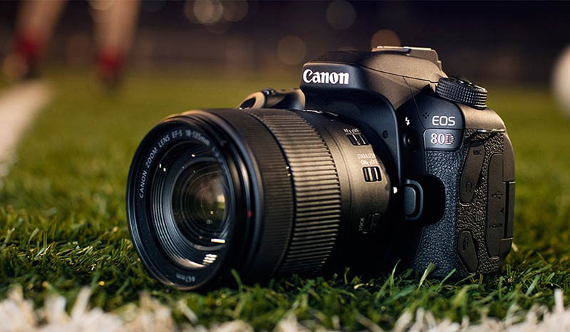

Máy ảnh là thiết bị dùng để ghi lại hình ảnh và khoảnh khắc trong cuộc sống. Nó giúp con người lưu giữ kỷ niệm, phục vụ học tập, công việc và sáng tạo nội dung.
Với sự phát triển của công nghệ, máy ảnh ngày nay có độ phân giải cao, khả năng lấy nét nhanh và quay video chất lượng tốt, đáp ứng nhiều nhu cầu khác nhau.
Máy ảnh được sử dụng rộng rãi trong du lịch, nghệ thuật, báo chí và mạng xã hội.
Quay lại